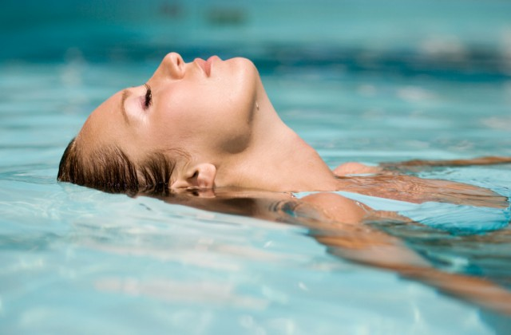

A escolhinha de natação da Vila Olimpica de Sobral ensina crianças/ adolescentes que ja sabem nadar, a se aperfeiçoarem mais na natação podendo sim virar um atleta, participando de competições, ganhando medalhas, sendo reconhecidos, até mesmo ser chamado para clubes de natação bem mais exelentes. Eles saberam nadar todos os 4 nados e assim escolher no que ele melhor se indentica, o que ele se desenvolve melhor em nadar.
Beneficios da Natação
elhora a saúde cardiovascular: A natação melhora o funcionamento do coração e o condicionamento físico
Fortalece os músculos: A natação desenvolve a musculatura e a resistência muscular.
Melhora a flexibilidade: A natação aumenta a flexibilidade do corpo
Ajuda a controlar o peso: A natação ajuda a queimar calorias e a controlar o peso.
Melhora a qualidade do sono: A natação contribui para uma melhor qualidade do sono.
Ajuda a regular o nível de glicose no sangue: A natação ajuda a regular o nível de glicose no sangue e aumenta a ação da insulina no corpo
Porque nadar é importante?
Além de condicionamento físico e fortalecimento cardiorrespiratório, a natação alivia o estresse, auxilia na perda de peso e promove saúde física e menta
Quais as vantagens e desvantagens da natação?
Uma das maiores vantagens da natação é a sua suavidade nas suas articulações , pois é um desporto sem impacto.
A razão pela qual a natação é tão viciante,faz nosso cérebro ficar mais calmo, nossa mente ficar mais tranquila, todo aquele estresse que tivemos durante o dia vai todo embora.porque as endorfinas secretadas se ligam aos receptores opioides no cérebro, responsáveis por funções como sedação, redução da dor e euforia.

O que significa MEDLEY na natação?
É a junção dos quatro estilos em uma só prova sendo indicada para os atletas mais versáteis